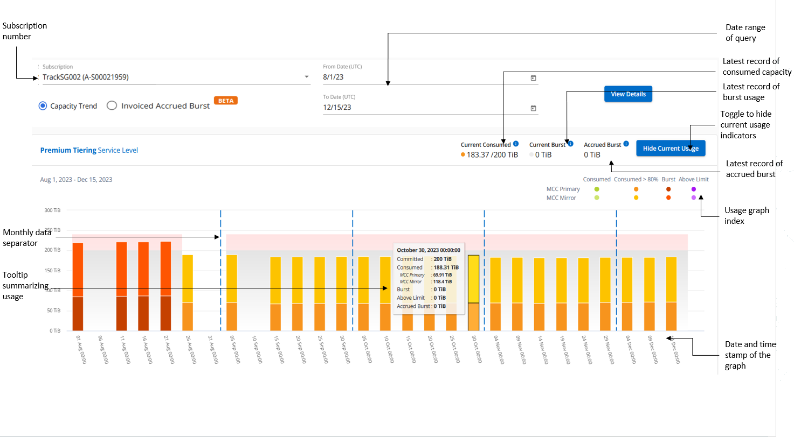
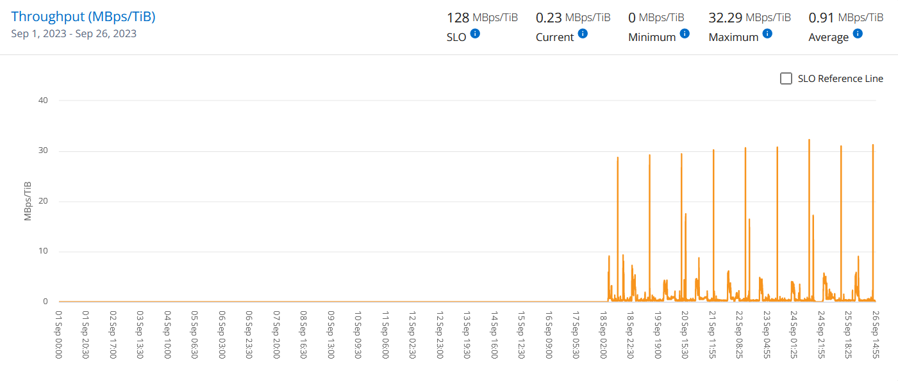

Services NetApp Keystone
Services NetApp Keystone
Tableau de bord et reporting Digital Advisor pour Keystone
 Suggérer des modifications
Suggérer des modifications
Le tableau de bord Active IQ Digital Advisor (conseiller digital) vous permet de contrôler l'utilisation de vos abonnements NetApp Keystone et de générer des rapports. Lorsque vous vous abonnez aux services Keystone, vous pouvez afficher les détails de votre abonnement et de votre utilisation dans le widget abonnements Keystone du tableau de bord Digital Advisor.

|
Les informations disponibles ici s'appliquent à ONTAP et à StorageGRID. Des exceptions ont été signalées dans les sections pertinentes. |
Pour plus d'informations sur le widget Keystone Digital Advisor, reportez-vous à la section "Consultez l'utilisation de la capacité sur l'abonnement NetApp Keystone".
Pour afficher votre abonnement Keystone et les détails d'utilisation, effectuez les opérations suivantes :
-
Connectez-vous à Digital Advisor. Le widget abonnements Keystone qui résume l'utilisation de la capacité par rapport aux services Keystone achetés s'affiche.
-
Dans le widget abonnements Keystone, cliquez sur Afficher plus de détails pour afficher les détails d'utilisation et les alertes sur vos volumes sur la page abonnements Keystone. Dans le volet de navigation de gauche, vous pouvez également accéder à GÉNÉRAL > abonnements Keystone.
Les détails des abonnements, des graphiques d'utilisation pour chaque niveau de service et des détails sur le volume s'affichent dans les différents onglets de l'écran abonnements Keystone.
|
|
Dans les abonnements Keystone, la consommation de capacité s'affiche en Tibs sur les tableaux de bord et les rapports, puis est arrondie à deux décimales. Si l'utilisation est inférieure à 0.01 Tio, la valeur est indiquée comme 0 ou No Usage. Les données de ces écrans sont affichées en heure UTC (fuseau horaire du serveur). Lorsque vous saisissez une date pour la requête, elle est automatiquement considérée comme étant en heure UTC.
|
Pour plus d'informations sur les mesures d'utilisation, reportez-vous à la section "Metrics et définitions de niveaux de service". Pour plus d'informations sur les différentes capacités utilisées dans Keystone, reportez-vous à "Définitions de capacité des services Keystone".
Abonnements
Vous pouvez afficher la liste de vos abonnements dans l'onglet abonnements.

Vous pouvez voir les informations suivantes. Pour certains champs et certaines colonnes, vous pouvez voir des informations ou des icônes d'avertissement et des info-bulles qui vous fournissent des informations supplémentaires sur les données.
-
Numéro d'abonnement : numéro d'abonnement de l'abonnement Keystone attribué par NetApp.
-
ID de suivi : ID de suivi attribué au moment de l'activation de l'abonnement. Il s'agit d'un identifiant unique pour chaque abonnement et site, utilisé pour le suivi de l'abonnement.

Si un niveau de service de protection des données ou un plan tarifaire est attribué à votre abonnement, une info-bulle vous aide à identifier l'ID de suivi de l'abonnement partenaire dans une configuration MetroCluster. Pour savoir comment afficher les abonnements détaillés de la consommation par partenaire dans une configuration MetroCluster, reportez-vous à la section "Des graphiques de référence pour la protection des données". -
Type d'utilisation : vous avez peut-être souscrit à plusieurs abonnements Keystone (version 1) ou Keystone STaaS (version 2). Les règles de plan tarifaire pour les niveaux de service peuvent varier selon les deux types d'abonnement. En regardant la valeur de cette colonne, vous savez si le type d'utilisation est facturé en fonction de l'utilisation provisionnée ou logique pour l'un ou l'autre
v1ouv2. Pour plus d'informations sur le stockage en tant que service Keystone, voir "Documentation Keystone STaaS". -
Période de facturation : période de facturation de l'abonnement, telle que mensuelle, trimestrielle ou annuelle.
-
Date de début : la date de début de l'abonnement.
-
Date de fin : date de fin de l'abonnement. Si vous avez un abonnement mensuel qui se renouvelle automatiquement tous les mois, vous voyez
Month-on-monthau lieu de la date de fin. En fonction de cette date, il est possible que des messages d'information s'affichent pour les abonnements qui approchent de leur expiration ou auxquels des polices de renouvellement automatique sont jointes. -
Statut d'utilisation : indique la quantité d'abonnement utilisée ou excédentaire. Vous pouvez trier la liste en fonction de cette colonne si vous souhaitez afficher les enregistrements de consommation les plus élevés.
-
 : Cliquer sur cette icône pour un abonnement ouvre l'onglet Current usage avec des détails supplémentaires sur cet abonnement.
: Cliquer sur cette icône pour un abonnement ouvre l'onglet Current usage avec des détails supplémentaires sur cet abonnement. -
 : Cliquez sur cette icône pour ouvrir l'onglet Capacity Trend, dans lequel vous pouvez afficher l'historique des données d'utilisation pour chaque niveau de service inclus dans cet abonnement.
: Cliquez sur cette icône pour ouvrir l'onglet Capacity Trend, dans lequel vous pouvez afficher l'historique des données d'utilisation pour chaque niveau de service inclus dans cet abonnement.
Vous pouvez consulter les indicateurs d'utilisation suivants pour vérifier l'état d'utilisation de chaque abonnement :

 : Pas d'utilisation de capacité enregistrée par rapport à la capacité engagée du niveau de service
: Pas d'utilisation de capacité enregistrée par rapport à la capacité engagée du niveau de service
 : La consommation est normale, à moins de 80 % de la capacité engagée
: La consommation est normale, à moins de 80 % de la capacité engagée
: Consommation maximale, c'est-à-dire que l'utilisation est sur le point d'atteindre 100 % ou plus de la capacité allouée. La colonne Uconsommé affiche cet indicateur pour toute consommation supérieure à 80 % de la capacité engagée
: La consommation est dans la limite de rafale. La consommation en rafale est la consommation qui occupe la capacité engagement de 100 % d'un niveau de service. Elle est conforme à la limite convenue d'utilisation en rafale, notamment 120 %
 : Indique la consommation au-dessus de la limite de rafale stipulée
: Indique la consommation au-dessus de la limite de rafale stipulée
Utilisation actuelle
Pour connaître les détails de vos abonnements, cliquez sur l'onglet utilisation actuelle et sélectionnez le numéro d'abonnement requis.

Les détails, tels que le nom du niveau de service, engagé, consommé, capacités disponibles et utilisation actuelle et en rafale sont affichés en Tio.
|
|
Le |
Pour plus d'informations sur vos services de stockage Keystone et sur les niveaux de service appropriés, reportez-vous à la section "Niveaux de services".
Tendance de la capacité
L'onglet Capacity Trend affiche les données historiques de vos abonnements Keystone pour une période spécifique. Les graphiques verticaux affichent les détails d'utilisation de la plage de temps sélectionnée, ainsi que les indicateurs appropriés pour vous permettre de comparer et de générer des rapports.
-
Cliquez sur l'onglet tendance capacité.
-
Sélectionnez l'abonnement requis pour lequel vous souhaitez afficher les détails. Le premier abonnement dans votre nom de compte est sélectionné par défaut.
-
Sélectionnez tendance capacité si vous souhaitez afficher les données historiques et analyser la tendance d'utilisation de la capacité. Sélectionnez facturé Burst cumulé si vous souhaitez afficher les données historiques d'utilisation en rafale, pour lesquelles des factures ont été générées. Vous pouvez utiliser ces données pour analyser l'utilisation facturée selon votre facture.
Affichez la tendance de la capacité
En savoir plus >>
Si vous avez sélectionné l'option Capacity Trend, procédez comme suit :
-
Sélectionnez la plage horaire dans les icônes de calendrier des champs Date de début et Date de fin. Sélectionnez la plage de dates de la requête. La plage de dates peut être le début du mois, la date de début de l'abonnement à la date actuelle ou la date de fin de l'abonnement. Vous ne pouvez pas sélectionner une date future.
Pour des performances et une expérience utilisateur optimales, limitez la plage de dates de votre requête à trois mois. -
Cliquez sur Afficher les détails. Les données historiques de consommation de l'abonnement pour chaque niveau de service s'affichent en fonction de la plage horaire sélectionnée.
Les graphiques à barres affichent le nom du niveau de service et la capacité consommée par rapport à ce niveau de service pour la plage de dates. La date et l'heure de la collection sont affichées en bas du graphique. En fonction de la plage de dates de votre requête, les graphiques d'utilisation sont affichés dans une plage de 30 points de collecte de données. Vous pouvez placer le curseur de la souris sur les graphiques pour afficher la répartition de l'utilisation en termes de données validées, consommées, en rafale et au-dessus de la limite de rafale à ce point de collecte de données.

Les couleurs suivantes dans les graphiques à barres indiquent la capacité consommée comme défini dans le niveau de service. Les données mensuelles dans les graphiques sont séparées par une ligne verticale.
-
Vert : à moins de 80 %.
-
Ambre: 80% - 100%.
-
Rouge : utilisation en rafale (100 % de la capacité validée par rapport à la limite de rafale convenue)
-
Violet : au-dessus de la limite d'éclatement ou
Above Limit.
|
|
Un graphique vide indique qu'aucune donnée n'est disponible dans votre environnement à ce point de collecte de données. |
Vous pouvez cliquer sur le bouton à bascule Afficher l'utilisation actuelle pour afficher les données de consommation, d'utilisation en rafale et d'accumulation en rafale pour la période de facturation en cours. Ces détails ne sont pas basés sur la plage de dates de la requête.
-
Courant consommé : indicateur de la capacité consommée (en Tio) définie pour le niveau de service. Ce champ utilise des couleurs spécifiques :
-
Pas de couleur : utilisation en rafale ou supérieure.
-
Gris : aucune utilisation.
-
Vert : dans un délai de 80 % de la capacité allouée.
-
Orange : 80 % de la capacité allouée à la capacité de rafale.
-
-
Burst courant : indicateur de la capacité consommée dans la limite de rafale définie ou au-dessus. Toute utilisation comprise dans la limite de capacité supplémentaire convenue, par exemple, 20 % de plus que la capacité allouée se situe dans la limite de capacité supplémentaire. Autre utilisation : utilisation supérieure à la limite d'augmentation. Ce champ affiche des couleurs spécifiques :
-
Pas de couleur : pas d'utilisation de rafale.
-
Rouge : utilisation en rafale.
-
Violet : au-dessus de la limite d'éclatement.
-
-
Augmentation cumulée : indicateur de l'utilisation ou de la capacité consommée cumulée calculée par mois pour la période de facturation en cours. L'utilisation des rafales cumulées est calculée en fonction de la capacité engagée et consommée pour un niveau de service :
(consumed - committed)/365.25/12.
Afficher les frais supplémentaires facturés
En savoir plus >>
Si vous avez sélectionné l'option facturé Burst cumulé, par défaut, vous pouvez voir les données d'utilisation de la capacité supplémentaire cumulée mensuelle des 12 derniers mois qui ont été facturés. Vous pouvez effectuer une requête par période allant jusqu'à 30 mois. Les graphiques à barres sont affichés pour les données facturées et si l'utilisation n'a pas encore été facturée, vous voyez Pending pour ce mois-ci.
|
|
L'utilisation de capacité supplémentaire facturée accumulée est calculée par période de facturation en fonction de la capacité allouée et consommée pour un niveau de service. |

Cette fonctionnalité est disponible en mode d'aperçu uniquement. Contactez votre KSM pour en savoir plus sur cette fonctionnalité.
Des graphiques de référence pour la protection des données
En savoir plus >>
Si vous vous êtes abonné au service de protection des données, vous pouvez voir l'éclatement des données de consommation pour les sites partenaires MetroCluster dans l'onglet tendance de capacité.
Pour plus d'informations sur la protection des données, reportez-vous à la section "Protection des données".
Si les clusters de votre environnement de stockage ONTAP sont configurés dans une configuration MetroCluster, les données de consommation de votre abonnement Keystone sont divisées dans le même graphique de données d'historique pour afficher la consommation au niveau des sites principaux et en miroir pour les niveaux de service de base.
|
|
Les graphiques à barres de consommation sont divisés uniquement pour les niveaux de service de base. Pour les niveaux de service de protection des données, cette démarcation n'apparaît pas. |
Pour les niveaux de service de protection des données, la consommation totale est répartie entre les sites partenaires, et l'utilisation sur chaque site partenaire est reflétée et facturée dans un abonnement séparé, c'est-à-dire un abonnement pour le site principal et un autre pour le site miroir. C'est pourquoi, lorsque vous sélectionnez le numéro d'abonnement pour le site principal dans l'onglet Capacity Trend, les graphiques de consommation pour les niveaux de service DP affichent les détails de consommation discrète pour le site principal uniquement. Étant donné MetroCluster que chaque site partenaire fait office de source et de miroir, la consommation totale sur chaque site inclut la source et les volumes en miroir créés sur ce site.
|
|
L'info-bulle en regard de l'ID de superposition de votre abonnement dans l'onglet Current usage vous aide à identifier l'abonnement partenaire dans la configuration MetroCluster. |
Pour les niveaux de service de base, chaque volume est facturé comme provisionné sur le site primaire et le site miroir. Le même graphique à barres est donc divisé en fonction de la consommation au niveau des sites primaire et miroir.
L'image suivante affiche les graphiques pour le niveau de service Extreme (niveau de service de base) et un numéro d'abonnement principal. Le même graphique de données historiques marque la consommation du site miroir dans une ombre plus claire du code de couleur utilisé pour le site principal. L'infobulle qui s'affiche lorsque vous passez la souris, affiche l'éclatement de la consommation (en Tio) pour les sites principaux et miroirs, 1.02 Tio et 1.05 Tio respectivement.

Pour le niveau de service Data-Protect Extreme (niveau de service de protection des données), les graphiques apparaissent comme suit :

Lorsque vous cochez l'abonnement secondaire, vous constatez que le graphique à barres du niveau de service Extreme (niveau de service de base) au même point de collecte de données que le site partenaire est inversé, et que l'éclatement de la consommation au niveau des sites principal et miroir est respectivement de 1.05 Tio et 1.02 Tio.

Pour le niveau de service Data-Protect Extreme (niveau de service de protection des données), le graphique apparaît comme suit au même point de collecte que le site partenaire :

Pour plus d'informations sur la protection de vos données par MetroCluster, reportez-vous à la section "Tout savoir sur la protection des données et la reprise après incident MetroCluster".
Volumes et objets
Dans l'onglet volumes et objets, vous pouvez afficher la consommation et d'autres détails pour vos volumes dans ONTAP. Pour StorageGRID, cet onglet affiche les nœuds et leur utilisation individuelle dans votre environnement de stockage objet.
|
|
Le nom de cet onglet varie selon la nature du déploiement sur votre site. Si vous disposez à la fois de volumes et d'un stockage objet, vous pouvez voir l'onglet volumes et objets. Si votre environnement de stockage ne contient que des volumes, le nom devient volumes. Pour le stockage d'objets uniquement, vous pouvez voir l'onglet objets. |
Afficher les détails du volume ONTAP
En savoir plus >>
Pour ONTAP, l'onglet volumes affiche des informations telles que l'utilisation de la capacité, le type de volume, le cluster, l'agrégat et le niveau de service des volumes de votre environnement de stockage géré par votre abonnement Keystone.
-
Cliquez sur l'onglet volumes.
-
Sélectionnez le numéro d'abonnement. Par défaut, le premier numéro d'abonnement disponible est sélectionné.
Les détails du volume s'affichent. Vous pouvez faire défiler les colonnes et en savoir plus en passant votre souris sur les icônes d'information à côté des en-têtes de colonne. Vous pouvez trier les différentes colonnes et filtrer les listes pour afficher des informations spécifiques.
Pour les services de protection des données, une colonne supplémentaire apparaît pour indiquer si le volume est un volume primaire ou miroir dans la configuration MetroCluster. Vous pouvez copier des numéros de série de nœud individuels en cliquant sur le bouton Copier les séries de nœud.

Afficher les nœuds StorageGRID et la consommation
En savoir plus >>
Pour StorageGRID, cet onglet affiche l'utilisation logique des nœuds pour le stockage objet.
-
Cliquez sur l'onglet objets.
-
Sélectionnez le numéro d'abonnement. Par défaut, le premier numéro d'abonnement disponible est sélectionné. Lorsque vous sélectionnez le numéro d'abonnement, le lien pour les détails du stockage objet est activé.

-
Cliquez sur le lien pour afficher les noms des nœuds et les détails d'utilisation logique de chaque nœud.

Performance
L'onglet Performance vous permet de consulter les metrics de performances des volumes ONTAP gérés par vos abonnements Keystone.
|
|
Cet onglet est disponible en option. Contactez le support technique pour afficher cet onglet. |
-
Cliquez sur l'onglet Performance.
-
Sélectionnez le numéro d'abonnement. Par défaut, le premier numéro d'abonnement est sélectionné.
-
Sélectionnez le nom du volume souhaité dans la liste.
Vous pouvez également cliquer sur
Icône en regard d'un volume ONTAP dans l'onglet volumes pour accéder à cet onglet. -
Sélectionnez la plage de dates de la requête. La plage de dates peut être le début du mois, la date de début de l'abonnement à la date actuelle ou la date de fin de l'abonnement. Vous ne pouvez pas sélectionner une date future.
Les informations récupérées sont basées sur l'objectif de niveau de service pour chaque niveau de service. Par exemple, les pics d'IOPS, le débit maximal, la latence cible et d'autres mesures sont déterminés par les paramètres individuels du niveau de service. Pour plus d'informations sur les paramètres, reportez-vous à la section "Niveaux de services".
|
|
Si vous cochez la case SLO Reference Line, les graphiques IOPS, débit et latence sont affichés en fonction de l'objectif de niveau de service pour le niveau de service. Sinon, elles sont affichées en nombres réels. |
Les données de performances affichées sur le graphique horizontal représentent une moyenne toutes les cinq minutes et sont organisées selon la plage de dates de la requête. Vous pouvez faire défiler les graphiques et passer le curseur de la souris sur des points de données spécifiques pour explorer plus en détail les données collectées.
Vous pouvez afficher et comparer les mesures de performances dans les sections suivantes en fonction de la combinaison du numéro d'abonnement, du nom du volume et de la plage de dates sélectionnée. Les détails s'affichent selon le niveau de service attribué au volume. Vous pouvez afficher le nom du cluster et le type de volume, c'est-à-dire les autorisations de lecture et d'écriture attribuées au volume. Tout message d'avertissement associé au volume s'affiche également.
IOPS/Tio
Cette section affiche les graphiques d'entrées-sorties des charges de travail du volume en fonction de la plage de dates de la requête. Les valeurs d'IOPS maximales pour le niveau de service et d'IOPS actuelles (au cours des cinq dernières minutes, non basées sur la plage de dates de la requête) sont affichées, ainsi que les valeurs d'IOPS minimales, maximales et moyennes pour la plage de temps, en IOPS/Tio.

Débit (Mbit/s/Tio)
Cette section affiche les graphiques de débit des charges de travail du volume en fonction de la plage de dates de la requête. Le débit maximal pour le niveau de service (SLO Max) et le débit actuel (au cours des cinq dernières minutes, non basé sur la plage de dates de la requête) s'affichent, ainsi que le débit minimal, maximal et moyen pour la plage de temps, en Mbit/s.

Latence (ms)
Cette section affiche les graphiques de latence des charges de travail du volume en fonction de la plage de dates de la requête. Les valeurs de latence maximale pour le niveau de service (cible SLO) et de latence actuelle (au cours des cinq dernières minutes, et non pas en fonction de la plage de dates de la requête) s'affichent, ainsi que la latence minimale, maximale et moyenne de la plage de temps, en millisecondes.
Ce graphique présente les couleurs suivantes :
-
Bleu clair : latence. Il s'agit de la latence réelle qui inclut toute latence autre que votre service Keystone. Cela peut inclure une latence supplémentaire, telle que la latence entre votre réseau et votre client.
-
Bleu foncé : latence effective. La latence effective est la latence applicable uniquement à votre service Keystone en ce qui concerne votre SLA.

Logique utilisée (Tio)
Cette section affiche les capacités provisionnées et logiques utilisées du volume. La capacité logique utilisée actuelle (au cours des cinq dernières minutes, non basée sur la plage de dates de la requête), ainsi que l'utilisation minimale, maximale et moyenne de la plage de temps sont affichées en Tibs. Sur ce graphique, la zone grise représente la capacité allouée et le graphique jaune indique l'utilisation logique.

Générer des rapports
Vous pouvez générer et afficher des rapports pour les détails de votre abonnement, les données d'utilisation historiques pour une plage de temps et les détails des volumes à partir de chacun des onglets en cliquant sur le bouton Télécharger CSV : 
Les détails sont générés au format CSV que vous pouvez enregistrer pour une utilisation ultérieure.
Dans l'onglet Capacity Trend, vous avez la possibilité de télécharger le rapport pour les 30 points de collecte de données par défaut de la plage de dates de votre requête ou des rapports quotidiens.

Un exemple de rapport pour l'onglet Capacity Trend, où les données graphiques sont converties :

Afficher les alertes
Les alertes du tableau de bord envoient des messages d'avertissement pour vous permettre de comprendre les problèmes qui se produisent dans votre environnement de stockage.
Les alertes peuvent être de deux types :
-
Information : pour les problèmes, tels que vos abonnements qui approchent d'une fin, vous pouvez voir les alertes d'information. Placez le curseur sur l'icône d'information pour en savoir plus sur le problème.
-
Avertissement : les problèmes, tels que non-conformité, sont affichés comme avertissements. Par exemple, si des volumes dans vos clusters gérés ne sont pas associés à des règles AQoS adaptative (Adaptive QoS), un message d'avertissement s'affiche. Vous pouvez cliquer sur le lien du message d'avertissement pour afficher la liste des volumes non conformes dans l'onglet volumes.
Si vous avez souscrit à un seul niveau de service ou plan tarifaire, vous ne pourrez pas voir l'alerte pour les volumes non conformes. Pour plus d'informations sur les stratégies AQoS, voir "Facturation et règles de QoS adaptatives".

Pour plus d'informations sur ces messages d'avertissement et d'avertissement, contactez le support NetApp.